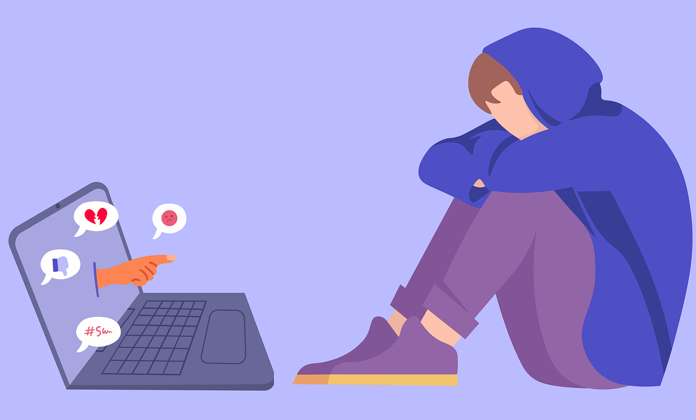
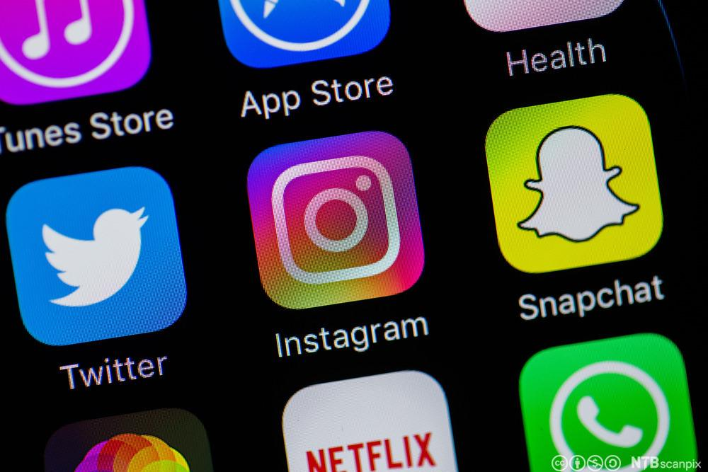

Sosialt press
Mange, spesielt unge, føler press for å være «perfekte». Dette er ofte på grunn av sosiale medier. På sosiale medier legger mange ut bilder av deres beste selv. Ungdom kan fort tro at dette er et krav for å være ønsket eller velkommen. Slikt kan gjøre at man føler seg ekkel, stygg eller frastøtende. Dette er et problem for mange.
Individer skader seg selv eller i noen tilfeller, tar sitt eget liv på grunn av press. Sosialt press handler for det meste om kroppspress og det påvirker flest jenter ifølge en rapport fra Verdens helseorganisasjon*. På rapporten står det at en av fem elleveårige norske jenter føler seg for tykke og halvparten av de femtenårige jentene føler det samme, men bare 9 prosent av Norge er overvektige i denne alderen. Dette viser godt hvor stort kroppspress er.
Problemet med det er at ungdom føler blir usikre på kroppen sin, noen synes det er vanskelig å komme på skolen og dermed skulker de som gjør at de får mindre utdanning og som deretter gjør at det er vanskeligere å få jobbe videre med det man har lyst til.

Ukjent

Rolf Vennenbernd
Manipulasjon via sosiale medier
I 2016 ble store deler av USA manipulert av sosiale medier. Russland påvirket valget og stemmerne til å stemme på Trump. De ville ha kaos og mistro til staten. Russland trengte ikke å bruke mye penger eller innstas for å få det til.
Andreas Whal gjorde det samme på en skole i Lillestrøm som et forsøk på NRK. Han ville at Senterpartiet skulle få en høyere prosent. De fikk dobbel så høy prosent på 6 måneder, men tenk om han hadde gjort det i flere år. Russland hadde sikkert begynt mange år før 2016.
Dette var bare to eksempler på manipulasjon via sosiale medier. Tenk hvor ofte dette skjer uten at du at vet det.